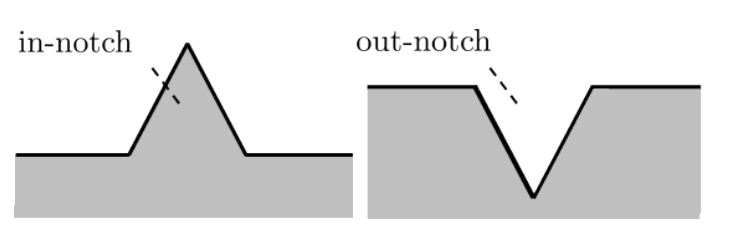

Overview
A ReLU network divides input space into regions within which it acts affinely. Counting these regions describes one aspect of the network's representation, but the same decision boundary can be realized by architectures with very different counts. This raises a geometric question: how can we describe the complexity of the classification itself?
To study this, we represent one class as the zero set of a nonnegative ReLU network \(N\). An input belongs to that class when \(N(x)=0\); the other class has \(N(x)>0\). This lets us reason about decision geometry through sets and logical operations:
\[ C=\{x:N(x)=0\}. \]Our central construction is a tessellation-filtering network: a network that combines geometric pieces already supplied by another network. Its output can change how these pieces form a class region while keeping or reducing the decision-relevant halfspace tessellation. Here a tessellation is a partition into cells, and a halfspace is one side of a hyperplane. Halfspaces that do not affect the classification are removed to obtain the effective tessellation.
Combining pieces through Boolean structure
Let a body network \(V\) produce nonnegative outputs \(y_1,y_2,y_3\). A simple filtering network placed on top is
\[ U(y)=\min\{y_1+y_2,\,y_3\}. \]Because the outputs are nonnegative, \(U(y)=0\) precisely when \(y_1=y_2=0\), or when \(y_3=0\). The sum expresses an AND condition: both terms must vanish. The minimum expresses an OR condition: either branch can vanish. More generally, minima of sums give unions of intersections of zero sets. These operations can be implemented by ReLU networks, connecting the geometry of the classifier to Boolean algebra.
The composition \(U\circ V\) selects and combines cells using the existing geometric structure. Its implementation may contain additional internal activation regions, while its effective halfspace tessellation introduces no new decision-relevant cuts. This distinction explains why the number of linear regions alone can give an incomplete picture of decision-boundary complexity.
Measuring shape through notches
We describe shape complexity by counting deviations from convexity, which we call notches. An out-notch is a convex piece outside the class that lies between parts of it; an in-notch describes the corresponding situation after exchanging the two classes. A minimal exhaustive configuration of these pieces gives the notch count. This captures features that counting connected components or holes can miss: a connected region without holes can still have a ragged boundary.

The halfspace tessellation lets us translate this geometry into binary patterns: each bit records which side of a hyperplane contains an input. Hamming distance counts changes of side. A convex set of patterns contains every shortest Hamming path between any two of its elements. Establishing the correspondence with convex arrangements of cells makes Boolean methods available for shape analysis. The resulting notch numbers are invariant across architectures that realize the same classification.
Local geometry and simpler representations
Our local representation theorem separates the classification into an underlying halfspace tessellation and a filtering component describing how its cells are combined. On a suitable neighbourhood of an input, this representation can extend across several cells, retaining information about nonconvexity that a single affine region cannot show.
Replacing the filtering component with one of lower shape complexity provides a way to simplify the decision surface, motivating an approach to pruning. The paper develops this theory, a sample-based approximation of local shape complexity, and illustrative examples with increasingly ragged boundaries. The Cantor-inspired example also connects to the analytically known shapes explored in CantorNet. Computing the full halfspace tessellation is demanding, so applying the construction to selected top layers is a natural direction for further work.
BibTeX
@inproceedings{moser2022tessellation,
title = {Tessellation-Filtering {ReLU} Neural Networks},
author = {Moser, Bernhard A. and Lewandowski, Michal and Kargaran, Somayeh and Zellinger, Werner and Biggio, Battista and Koutschan, Christoph},
booktitle = {Proceedings of the Thirty-First International Joint Conference on Artificial Intelligence},
pages = {3335--3341},
year = {2022},
doi = {10.24963/ijcai.2022/463},
url = {https://www.ijcai.org/proceedings/2022/463}
}